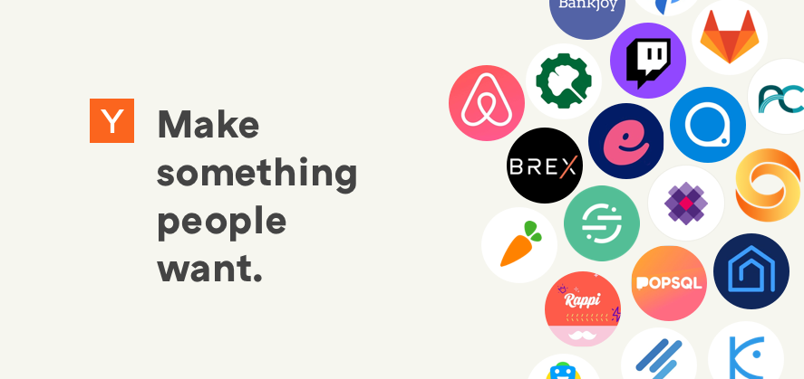
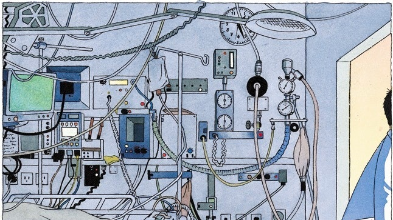

Your browser does not support the Canvas element.
Simon Zalazar Santillan

How to Get Startup Ideas — Paul Graham
Typography in ten minutes — Matthew Butterick

A Life-Saving Checklist — The New Yorker